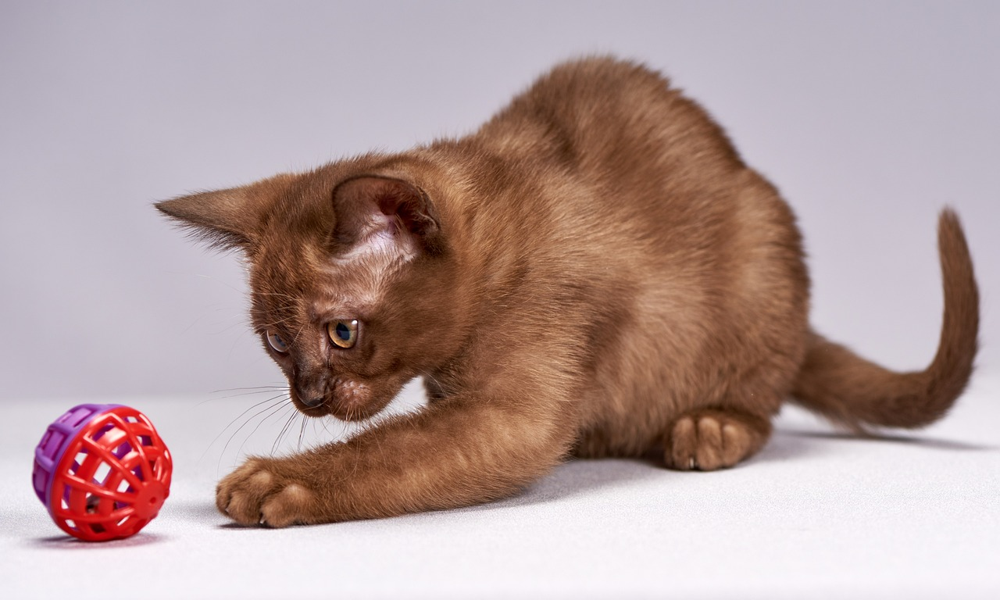
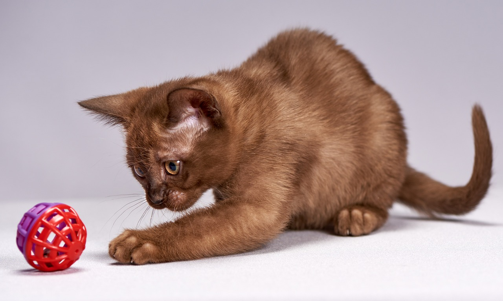

У Бурманских кошек короткая шерсть, крепкое тело и янтарные глаза. Они бывают четырех основных видов:
Эти кошки произошли из Бирмы. Темперамент у них:
Вся информация скопированна взята с Википедии
 
